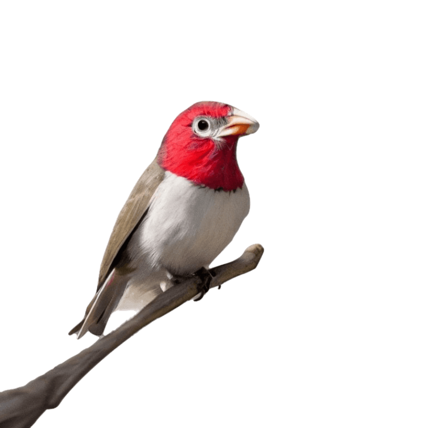

A Tale of Two Training Sets
“Make me a picture of a bird.”
Thirty seconds later you’ve got one. It’s perched on a branch, with a red head and glossy black wings. It has a sharp bill with a small neat hook at the tip. There is a bright ring of white around its eye.
The bird is convincing in its birdness but confusing in its identity. Is it a finch? A tanager? A weaver? It’s none of these. It is a sui generis bird. An amalgam of a bird produced by an artificial intelligence technique known as a transformer model. The brown wingtips and aqualine bill and bleached white eyering have been distilled from the whole of the internet, 4.85 billion photographs. It is a machinic hallucination of a bird, conjured from every photo of a feathered thing that has ever been taken and left on the open web and collected into enormous datasets, a bird born from a harvest of almost unimaginable scale.
The technical process unfolding in the backend is ingenuous. What is known as a transformer model is what processes your prompt, such as "a picture of a bird." It breaks that sentence down into tokens and uses self-attention mechanisms to determine the importance of each word in relation to others while considering their positions in the sequence. The transformer has many layers, and as the tokens pass through the layers, the model is refining a bird image by extracting and combining features from a vast collection of bird images that it was trained on. Finally, it generates a unique image by converting the output vectors representing these relationships into pixel values. That is the numerical blender from which your bird composite emerges. It’s a new thing.
Now close your laptop, and go outside. Go to a leafy place, ideally near water. Find an ordinary bird and take its picture. Upload it to Merlin, an app developed by the Cornell Lab of Ornithology, and two seconds later you’ll have a name. A white-throated sparrow, perhaps, a blue jay or or a common crow. If you hear another bird singing, you can use that app to identify the bird too, a feat that seems every bit as extraordinary as conjuring an imaginary bird onto a screen.
Merlin’s ability to identify a bird from an image or a song is thanks to a deep convolutional neural network, trained on hundreds of thousands of sounds and images from Cornell’s MacAuley library and hand-tagged by hundreds of volunteer birders. Merlin’s convolutional neural networks by gradually breaking down photos of birds (or images of sound waves) into smaller and smaller pieces and learning important features from them. Each layer of the network performs a specific task, such as removing noise, or identifying shapes like wings or beaks.
Put most simply these two acts, the generation of a bird and the identification are the product of the same thing: the computational systems we’ve come to label as ‘A.I.’ But as human systems, as combinations of software composed with intent and engineered with purpose, they could not be more different. There are different technologies involved, with their own technical approaches. But most importantly these are the results of different philosophies. They emerged from divergent choices and parallel histories. If we put them on a map of A.I.’s places and players today, they sit far apart.
But go back twenty years in time, and you’ll find there was a moment when these approaches and the people behind them orbited around the same small lab run by Professor Peitro Perona at California Institute of Technology (CalTech) in Pasadena. One was Serge Belongie who, having done his undergraduate studies at the lab in the 1990s,, rejoined it on a sabbatical in 2007. He would later become the co-creator of Visipedia. Another had just graduated from her PhD at the lab in 2005: Fei-Fei-Li, who would later become known as the lead creator of ImageNet.
Problems Where People Already Know the Answer
Peitro Perona is a highly influential computer vision professor, and has been at Caltech since 1991. Reading through the titles of the publications that came out of his lab at the start of the twenty-first century, you get a sense of what were then the main challenges for computer vision: Object class recognition by unsupervised scale-invariant learning. A Bayesian approach to unsupervised one-shot learning of object categories. Learning generative visual models from few training examples. What successes that the field had seen in the century before had mainly come through brute-force computation. Systems could be built that would reliably identify a class of object– say, a motorcycle– but they required thousands of training examples. These examples needed to be labeled by humans, with a bounding box showing where in the image the motorcycle (or the plant, or the bottle) would be found.
When Serge Belongie joined the Perona Lab for his sabbatical he brought along a stack of books that his advisor at UC Berkeley, Jitendra Malek, had given him. They were field guides for birds. Belongie had always been interested in taxonomies and principles of classification, but the challenge of bird recognition seemed like a pipe dream in the 1990s. The idea never left him.
At Perona’s lab at that time, researchers were working towards workflows where computers could be taught to see many different classes of things, and where their learning wouldn’t need to be supervised by humans. It would prove to be slow going, at least in part because the researchers in the labs would assemble training sets themselves. Belongie remembers scenes of people in the labs making training sets from whatever they found nearby. “They would make their Caltech 101 data set,” Belongie described. “Grabbing mugs and staplers, putting them on a turntable and taking pictures.”
By contrast, the type of learning that was embodied in field guides, where birds could only be told apart by paying attention to the smallest details, seemed so different from what his labmates were doing with mugs and staplers on turntables. To Belongie these seemed to be “gimmick problems.” People seemed to be rushing about, building datasets with the sole purpose of feeding the needs of the algorithms, and it annoyed Belongie.
“I couldn't really put words to it for a long time,” Belongie says.”I didn't know why it bothered me. But in a nutshell, I just thought we should be working on problems where we're answering questions, where people didn't already know the answer.”
By 2005, computer vision models could only reliably detect four objects: motorbikes, bicycles, people, and cars. In 2007, that number rose to twenty, now including airplanes, birds, bottles, some furniture, a TV. The VOC (Visual Object Class) challenge which is held yearly at the PASCAL conference run by Oxford University was the place where progress was benchmarked. A good model in 2009 could correctly label 72.5% of the test images in the car class in a dataset of 9,000. It could only recognize 59.3% of the dogs and just 44.2% of the bottles.

Success in seeing cars ticked up year-to-year: 80.4% in 2010. 85.5% in 2011. Progress was slow, but incremental. More people joined Computer Vision labs, and more training data sets got created, often in the researchers’ spare time. No-one really knew if it would work or not, so it was a time of creating datasets, testing the waters, and moving to the next thing. Here’s how Belongie describes that time:
“This was before deep learning, but it was still the case that when you didn't really know what to do, you could always collect the data set. And our field historically just peeked over the fence at natural language processing, and we just borrow everything from them. It started with Bag of Words, the most recent thing is transformers. But we're always looking at natural language processing and borrowing it….But, you know, hot garbage from one field is still hot garbage.”
Cuts of beef in Western Europe. Postage stamps. British Thimbles. Mushrooms of Southern California.
From those birding field guides, an idea began to develop that would shape the rest of his career: creating datasets led by communities of experts and enthusiasts. These were people who cared not only about identification in broad strokes (“this is a bird”) but on a really nuanced level that took years of carefully cultivated expertise (“this is a male savannah sparrow that has just finished a moult”). Put into computer vision terminology of classes and categories, Serge became interested in the fine, subordinate categories rather than the broad, generic ones. “We were dead set on tackling the problem of subordinate categories,” Serge explains, “because we wanted to capture and share human expertise. We wanted to answer these questions that were not already obvious to the average visual observer.”
Belongie and Pietro Perona brainstormed the types of domains that might offer rich territory for this kind of ultra-specific vision work. “And it was every hobby you could imagine,” Belongie recalls. “I mean, classic locomotives. Cuts of beef in Western Europe. Postage stamps. British Thimbles. Mushrooms of Southern California. Lepidoptera Pacific Northwest.” It became clear to Serge that each of these domains would offer up enough challenges for years (if not decades) of work. “Every one of these was this incredible rabbit hole.”
The deepest of these rabbit holes was the one that he’d stumbled upon first, with the books of birds left on his desk. So he went down it. Working with Caltech colleagues, he produced the CUB-200 dataset, an annotated set of images encompassing two hundred common birds in North America. Serge used a similar approach to ImageNet, downloading images from Flickr and using Mechanical Turk workers to annotate them with a bounding box, rough bird parts (bill, head, tail, etc.), and a set of attribute labels (size, wing color, head pattern).

Like ImageNet, CUB-200 was a hit with computer vision researchers. It was used in contests like the one at PASCAL, with teams competing to see how accurately they could match the images of birds with the labels that had been written by the Mechanical Turk workers. Accuracy rates passed 85%: a really impressive result for that period of time. But there was a big problem, as Belongie was about to discover.
Invited to present to the Cornell Lab of Ornithology in Ithaca, NY, Belongie was eager to share what he and his collaborators had made: the images, the tags, the descriptions. The gathered scientists at Cornell were working on what would become the Merlin App, which back then a was a taxonomic key for mobile phones, a tool for birders to identify birds by size, colour, and habitat.
“They were very frank with us,” Belongie recalls. “They said: we’ve heard about your project. The data set that you've collected stinks.”“It's garbage. Like whatever you scraped from some random website is total garbage, but we like what you're doing. So if you wanted to work with us, we were willing to do that. And Pietro wasn't used to being talked to that way because he's like, he's kind of a big deal. But I was still really grateful to be at the table with them. And so we agreed to start this collaboration. And that was it. That's what brought us to work with the Merlin team.”
The experts could see the problems with CUB-200. The identifications were wrong. The tags were useless. The descriptions were inaccurate. The training set might have been useful for computer scientists looking to benchmark their algorithms, but it was nearly useless when it came to identifying birds.
Belongie’s trip to Ithaca had produced a revelation. AI should be trained on the things that experts know, and on the ways that they come to know them. Datasets should be carefully curated, focused on the small, the detailed, the particular. A different revelation would shape the work of Fei-Fei Li, about 3000 miles south at Princeton University. Instead of careful human expertise and incorporating feedback, she was convinced that the secret to true computer vision could be found in scale.
The Section about ImageNet
“Have you ever heard of WordNet?”
That was the question that linguist Christiane D. Fellbaum asked Fei-Fei Li in a hallway. It was the mid-2000s, and Li had recently completed her PhD at Pietro Perona’s lab, and was continuing to work on computer vision questions at Princeton. Fellbaum had been at Princeton for two decades, and was working on a semantic database of the relationship between words. It was called WordNet.
WordNet is a database of the semantic relationships between words. There are 155,327 unique words in the English language version, filed in a myriad of different categories and linked with a prescribed set of hierarchies. The WordNet project was originally funded in 1985 by the U.S. Office of Naval Research. The idea of WordNet, from a linguist’s perspective, was to support research around human semantic memory. In order to study just exactly how a person can speak (and another person can understand) a sentence like “a goshawk hunts in the sky”, a linguist must first understand how the word “goshawk” functions in both hierarchies (goshawk -> raptor -> bird -> animal) and relationships (bird -> predation, bird -> flight). The WordNet database acts as a central repository and a look-up for these various concepts.
Statistical linguists quickly saw that WordNet could be useful as a lexical ontology. In particular, it could help with the problem of word-sense disambiguation: that a word can mean different things in different contexts. WordNet became an indispensable tool in the field of natural language processing (NLP), where scientists were trying to teach computers to process and analyze large amounts of unstructured text, a task particularly useful for intelligence gathering in military contexts.
Compared to the five class world (motorbikes, bicycles, people, cars) used in vision competitions in 2007, WordNet was miles ahead. Li reasoned that part of the reason that era’s vision algorithms were stuck with such unsatisfying levels of accuracy was that they just didn’t have enough data to work with. When Fellbaum mentioned that there was also a failed project to make an image version of this database, called ImageNet, Li took it on as the name for her project.
ImageNet was designed to harvest images that could cover the same scope as all the nouns in WordNet, which meant nearly 22,000 classes of nouns. The goal was that, for each step in ImageNet’s deep hierarchies, there would be enough images to be useful for training an AI system. Wordnet, for example, has 66 subconcepts for ‘motorcar’. Some of them are obvious: bus, ambulance, convertible. Others are archaic or downright strange: horseless runabout, phaeton, prowler. Python libraries that were already built for WordNet made it simple to traverse these hierarchies automatically, though, so Li and her team could produce lists to be used by image taggers.
At first these taggers were grad students. It became quickly clear, though, that with the scale of images that they’d need to collect to cover all of Wordnet– 14 million in the first version – the cost would be way too high and the available hours would be way too short. The project looked like it would stall. But the answer came when a student told Fei-Fei about a newly launched service for distributed crowd labor: Amazon Mechanical Turk.
Two years later, the ImageNet project would be the largest academic user of Mechanical Turk in the world. ‘Turkers’ from all over the world were tagging images with WordNet concepts at a rate of 50 images per minute, per worker. As multiple papers have shown, the average Turk worker is paid less than $2 per hour, with only 4% of workers reaching the bare U.S. minimum wage of $7.25 per hour. The first official release of ImageNet, known as ImageNet-21k had 14,197,122 images labeled with 21,841 unique classes. A smaller version called ImageNet1k, more suitable for computer vision contests at the time, was also released, containing 1,281,167 images labeled with a neat subset of 1,000 classes.
Browsing through ImageNet-21k is an experience akin to randomized madness. Choose ten images at random, and you might get a cudweed native to Denmark, a man with a sledgehammer hitting a car, a desklamp spray-painted gold and edged with chainmail, a black-striped damselfish, a pornographic image of a woman, a clothes dryer, and a concertina. The images vary in quality, from stock photos to grainy logos and blurry pics from 2000-era flip phones. It’s all like the detritus you might find at the bottom of a garbage can, if the internet was the garbage can.
The role of the human in ImageNet was meant to end with the Turk workers. Once they’d done their job of tagging, the image set became a computational, meant to be read by machines. And indeed, this was exactly how it was used– and used prodigiously– for the 14 years since its released. ImageNet became the defacto training set for object detection in particular, and for computer vision for widely. The ImageNet Challenge replaced the VOC Challenge at PASCAL and the annual contest became the way innovations in the field were measured and fêted. In 2012 a deep convolutional neural network called AlexNet won the ImageNet Challenge by cutting the classification error rate nearly in half, from 25% to 16%. This was a hugely significant moment in the field of machine learning, seen by many as the moment when the phenomenon of deep learning (which underlies technologies like GPT-3) made its first step into the mainstream.
So doing this simple thing, actually looking at the images in ImageNet, was an unexpected use case. It wasn’t designed for human eyes. Back in the motorbikes, bicycles, people, and cars era of computer vision it was still at least somewhat feasible to browse a data set. If you gave nine thousand images three seconds of your attention each, you’d be done in a month of eight hour days. To look at the test set of ImageNet would take you a year. To look at the entire set would take more than a century. So it became a dataset that was very, very difficult to look at. For most of a decade, very few people did.